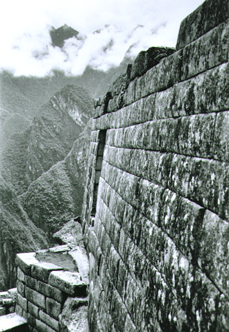

|  | Honorable Mention Machu Picchu, Peru “Free Morning” at Machu Picchu was for me the fulfillment of a dream: to be almost alone at this amazing site. Having taken the earliest bus up the mountain, I first spent an hour atop a high hill overlooking the entire complex, catching glimpse of first one area and then another revealed by the shifting clouds. Scattered llamas outnumbered the three humans on the hill. A few people began arriving, hikers from the Inca Trail above. I chatted for a while with a young American who was there after having worked a few weeks at Mother Teresa’s Mission in Calcutta. We spoke softly, as if in reverence for both places. The next few hours I walked down through this “lost city,” awestruck by the centuries-old construction by the Incan people and taking picture after picture. The magnificent stones begged me to use black and white film! As tourists and school groups arrived, I had to spend longer periods between shots, but it was worth the wait. It was all worth the wait – waiting for clouds to lift, waiting for sun to bathe the stones, waiting for people to move aside, and waiting since childhood to come to this unique and powerful place. |